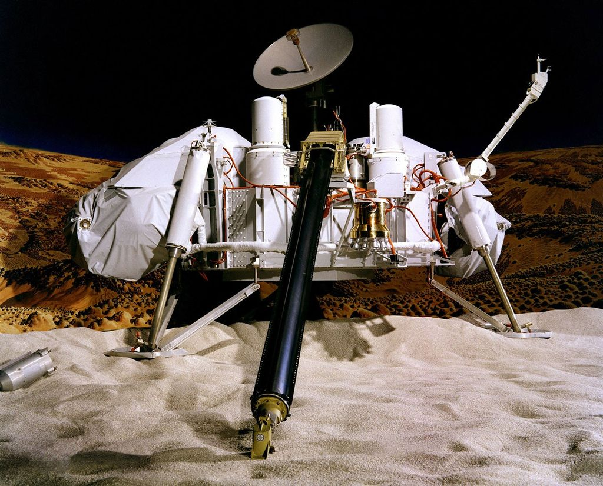

MARS EXPLORATION HISTORY
The Machines That Remain
Three explorers. Three remarkable stories.
01

1997 · FIRST MARS ROVER MISSION
Mars Pathfinder
Mars Pathfinder delivered the Sojourner rover to Mars in 1997. It helped scientists explore the Martian surface and study its rocks and soil.
READ THE STORY →02

2004 · TWIN ROVER MISSION
Mars Exploration Rovers
NASA sent two robotic explorers, Spirit and Opportunity, to investigate Mars and search for evidence of past water.
READ THE STORY →04

1976 · NASA MARS LANDER
Viking 1 Lander
Viking 1 landed on Mars in 1976 and became the first successful U.S. mission to operate on the Martian surface. It studied Martian soil and searched for signs of life.
READ THE STORY →